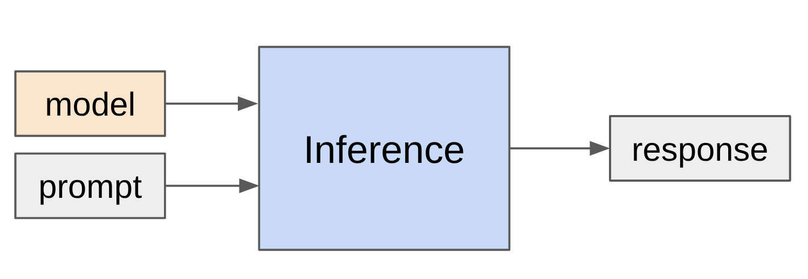
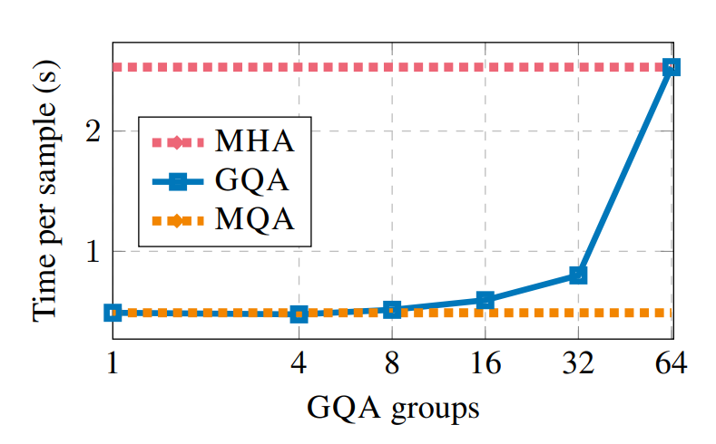
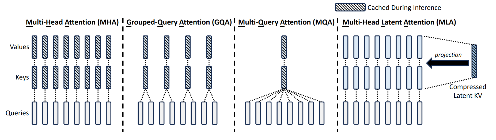
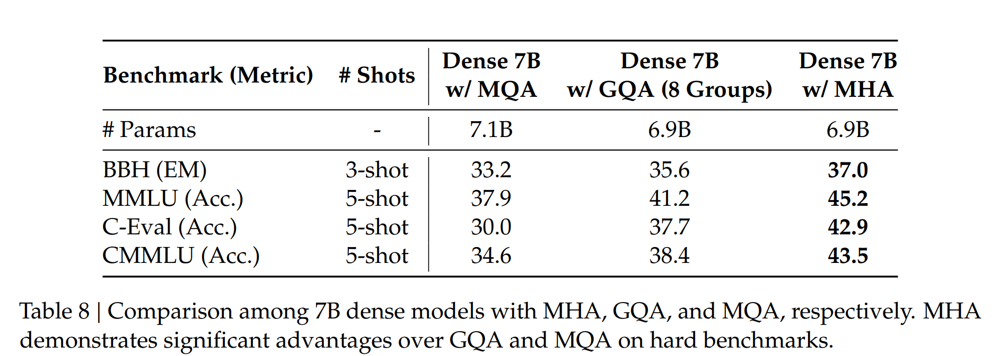
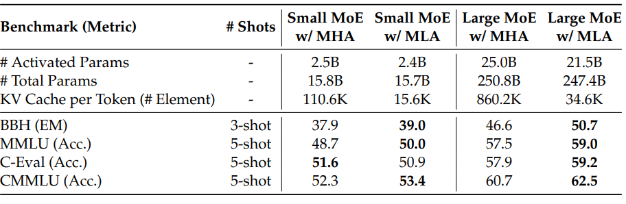
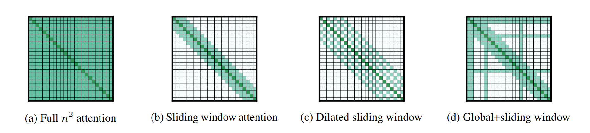
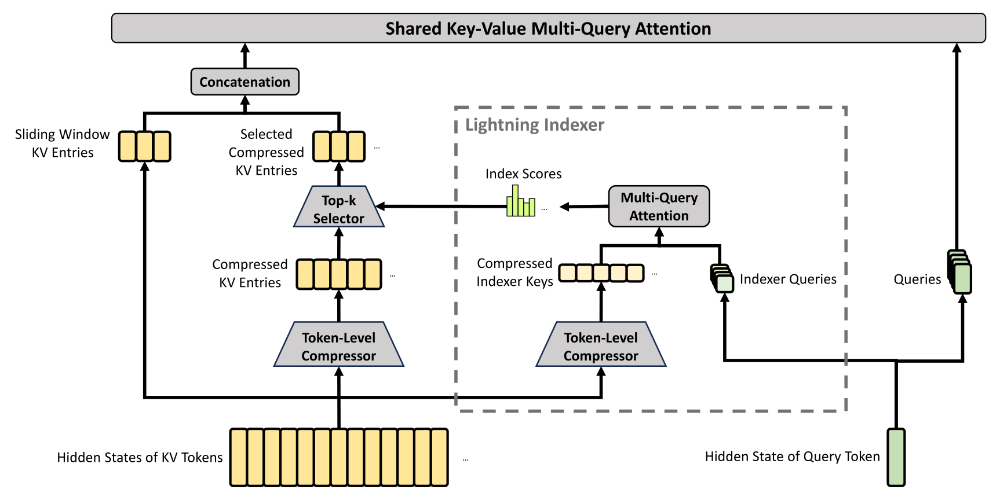
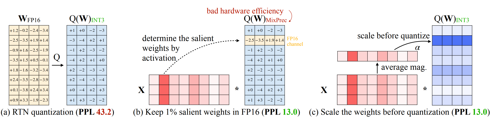
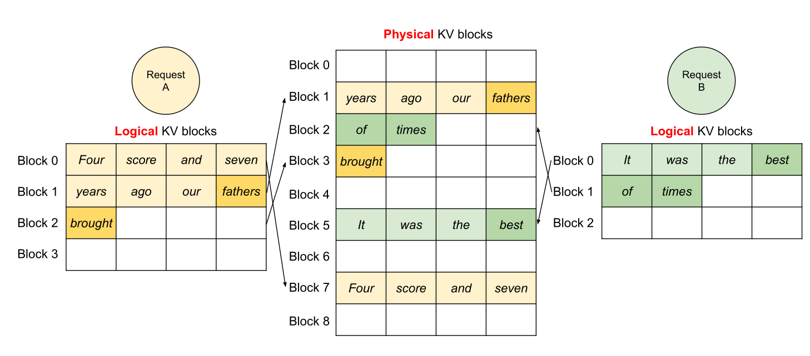
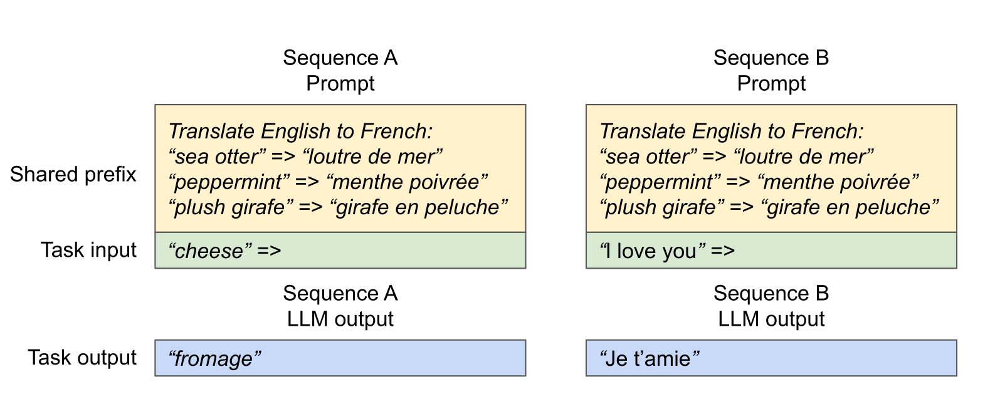

Lecture 10: inference

Understanding the inference workload
Inference shows up in many places:
- Actual use (chatbots, code completion, agents, batch data processing)
- Model evaluation (e.g., on instruction following)
- Reinforcement learning (sample many generations, then apply score)
Why efficiency matters: training is one-time cost, inference is repeated many times
- OpenAI processes ~8.6T tokens per day
- For reference, DeepSeek v4 was trained on 32T tokens
Moreover:
- Chatbots: most tokens are meant for human consumption (humans are bottleneck)
- Agents: query → internal trace → output for human (number of tokens generated can grow unbounded)
- Tokens generated = compute spent
Companies doing inference (a big deal for anyone who has a product or platform):
- Providers serving closed models (OpenAI, Anthropic, Google, etc.)
- Providers serving open-weight models (Together, Fireworks, Baseten, DeepInfra, Groq, Cerebras, etc.)
Open-source packages:
- vLLM: from Berkeley, pioneered PagedAttention, popular and good default
- SGLang: from Berkeley, pioneered RadixAttention, good for agentic workloads
- TensorRT-LLM: from NVIDIA, highly optimized for GPUs
- llama.cpp: C++ only, supports CPU inference, runs locally
Inference is huge. Important to make it fast.
What does "fast" mean (metrics)?
- Time-to-first-token (TTFT): how long user waits before any generation happens (for interactive applications)
- Latency (seconds/token): how fast tokens appear for one query (for interactive applications)
- Throughput (tokens/second): how fast tokens appear for many queries (for batch processing)
What governs efficiency?
- Training (supervised): you see all tokens, can parallelize over sequence (matmul in Transformer)
- Inference: you have to generate sequentially, can't parallelize over generation, so harder to fully utilize compute
Notation (similar to einops):
- Symbols denote dimensions (and their length): B (batch), T (sequence), D (model dim), H (head dim)
- Example: BTD x DH → BTH
- Contracting (red) dimensions appear in both operands and disappear from result
- Regular (black) dimensions appear in one operand and stay in result
- Example: BD x BD → B
- Batching (blue) dimensions appear in both operands and stay in result
Conventions:
- F = 4 D (MLP up-projects into 4x the model dimension)
- D = N H (model dimension split across N heads)
- N = K G (for GQA, number of heads split across K groups)
- S = T (during training, condition on S input tokens to predict T output tokens)
Setup: multiply X (B x D) and W (D x F) matrix
Intuition: B is batch size, D is hidden dimension, F is up-projection dimension in MLP
Let's do FLOPs and memory read/write accounting for the matrix multiplication (X * W).
- Read X (B x D) from HBM
- Read W (D x F) from HBM
- Compute Y = X (B x D) @ W (D x F)
- Write Y (B x F) to HBM
Recall that arithmetic intensity is how much compute we do per byte transferred (want to be high).
Assuming B is much less than D and F, then we can simplify:
Accelerator intensity of H100:
If computation intensity > accelerator intensity, compute-bound (good)
If computation intensity < accelerator intensity, memory-bound (bad)
Conclusion: compute-bound iff B > 295
Extreme case (B = 1, corresponding to matrix-vector product):
- Arithmetic intensity: 1
- Memory-bound (read D x F matrix, perform only 2 D F FLOPs)
- This is basically what happens with inference...
Naive inference: to generate each token, feed history into Transformer
Complexity: generating T tokens requires O(T^3) FLOPs (one feedforward pass is O(T^2))
Observation: a lot of the work can be shared across prefixes
Solution: store KV cache in HBM
KV cache: for every sequence (B), token (S), layer (L), head (K), store an H-dimensional vector
Two stages of inference:
- Prefill: given a prompt, encode into vectors (parallelizable like in training)
- Generation: generate new response tokens (sequential)
Let's compute the FLOPs and memory IO for both the MLP and attention layers.
S is the number of tokens we're conditioning on, T is the number of tokens we're generating.
Later, we'll specialize to prefill (T = S) and generation (T = 1).
MLP layers (only looking at the matrix multiplications)
- Read X (B x T x D) from HBM
- Read Wup (D x F), Wgate (D x F), Wdown (F x D) from HBM
- Compute U = X (B x T x D) @ Wup (D x F)
- Write U (B x T x F) to HBM
- Compute G = X (B x T x D) @ Wgate (D x F)
- Write G (B x T x F) to HBM
- Compute Y = GeLU(G)*U (B x T x F) @ Wdown (F x D)
- Write Y (B x T x D) to HBM
Assume that B*T is much smaller than D and F.
For the two stages:
- Prefill: easy to make compute-bound (good) by making
B*Tlarge enough (large batches, long sequences)
- Generation: two problems
- Generating one token at a time (T = 1)
- B is number of concurrent requests, unpredictable for interactive applications
Attention layers (focusing on the matrix multiplications with FlashAttention)
- S is number of previous tokens (already generated)
- T is number of next tokens (to generate logits for)
- Read Q (B x T x D), K (B x S x D), V (B x S x D) from HBM
- Compute A = Q (B x T x D) @ K (B x S x D)
- Compute Y = softmax(A) (B x S x T x K x G) @ V (B x S x K x H)
- Write Y (B x T x D) to HBM
For the two stages:
- Prefill: T = S
- Generation: T = 1
Unlike MLPs, no dependence on B, so batching doesn't help!
Why?
- In MLP layers, every sequence hits the same MLP weights (Wup, Wgate, Wdown don't depend on B)
- In attention layers, every sequence has its own KV cache vectors (Q, K, V all depend on B)
Summary:
- Prefill is compute-bound, generation is memory-bound
- Prefill MLP intensity:
B*S
- Prefill attention intensity:
S/2
- Generation MLP intensity:
B(requires concurrent requests)
- Generation attention intensity:
<1(impossible to improve)
So we have shown that inference is memory-bound.
Let us now compute the theoretical maximum latency and throughput of a single request.
Assumption: can overlap compute and communication perfectly and ignore overhead.
Instantiate latency and throughput for Llama 2 13B on an H100:
Result: worse latency, better throughput
Result: even worse latency, even better throughput
Result: doesn't fit into memory and throughput gains are diminishing too...
What increasing batch size does:
- Worsens latency because larger KV cache (O(B) size) to read/write
- Improves throughput because amortizes the cost of reading parameters
Tradeoff between latency and throughput:
- Smaller batch sizes yield better latency but worse throughput
- Larger batch sizes yield better throughput but worse latency
Easy parallelism: if you launch M copies of the model, latency is the same, throughput increases by M!
Harder parallelism: shard the model and the KV cache
[Scaling book chapter on inference]Note: time-to-first-token (TTFT) is essentially a function of prefill time
Use smaller batch sizes during prefill for faster TTFT
Use larger batch sizes during generation to improve throughput
Taking shortcuts (lossy)
Recall that memory is the bottleneck for inference.
So let's try to reduce the size of the KV cache
...but make sure we don't lose too much accuracy.
Grouped-query attention (GQA)
[Ainslie+ 2023]Idea: N query heads, but only K key and value heads, each interacting with N/K query heads
Multi-headed attention (MHA): K=N
Multi-query attention (MQA): K=1
Group-query attention (GQA): K is somewhere in between
Latency/throughput improves:
[Ainslie+ 2023]
Why does GQA improve latency and throughput?
GQA reduces the KV cache by a factor of N/K.
Reminder: reducing memory usage leads to speedup (since we're memory-bound).
Result: Worse latency, but better throughput (and it fits in memory now!)
Result: Worse latency, but better throughput (and still fits in memory!)
Check that accuracy doesn't drop:
[Ainslie+ 2023]
Multi-head latent attention (MLA)
[DeepSeek-AI+ 2024]
Normal attention: KV cache consists of K = W_K h, V = W_V h (N*H dimensions)
MLA: store compressed vector c = W_c h (C dimensions), project up to K = W_K c, V = W_V c when needed
DeepSeek v2: reduce N*H = 16384 to C = 512
Wrinkle: MLA is not compatible with RoPE, so need to add additional 64 dimensions for RoPE, so 512 + 64 = 576 total dimensions
Latency/throughput improvements follow similarly from the KV cache reduction as argued earlier
Let's now check the accuracy.
First, MHA is better than GQA (though more expensive) [Table 8]
[DeepSeek-AI+ 2024]
Second, MLA is even a bit better than MHA (and much cheaper) [Table 9]
[DeepSeek-AI+ 2024]
Cross-layer attention (CLA)
[Brandon+ 2024]
Idea: share KVs across layers (just as GQA shares KVs across heads)
Empirically improves the pareto frontier of accuracy and KV cache size (latency and throughput)

Local (sliding window) attention
[Beltagy+ 2020] [Child+ 2019] [Jiang+ 2023]
Idea: just look at the local context, which is most relevant for modeling
Effective context scales linearly with the number of layers
KV cache is independent of sequence length!
Problem: this can still hurt accuracy
Solution: interleave local attention with global attention (hybrid layers)
DeepSeek v4 attention
- Supports 1M context length

- Compressed Sparse Attention (CSA): compresses every m tokens into 1
- DeepSeek Sparse Attention (DSA): selects the top k
- Heavily Compressed Attention (HCA): compresses even more
Summary:
- Goal: reduce the KV cache size (since inference is memory-bound) without hurting accuracy
- Lower-dimensional KV cache (GQA, MLA, CLA)
- Local attention (truncates the KV cache) on some of the layers
- Other ideas: linear attention / state-space-models (Mamba 2, GatedDeltaNet), diffusion models
Key idea: reduce the precision of numbers
Less memory means higher latency/throughput (since inference is memory-bound).
Of course we have to worry about accuracy...
- fp32 (4 bytes): needed for parameters and optimizer states during training
- bf16 (2 bytes): default for inference
- fp8 (1 byte) [-240, 240] for e4m3 on H100s: can train if you dare
- int8 (1 byte) [-128, 127]: less accurate but cheaper than fp8, but for inference only
- int4 (0.5 bytes) [-8, 7]: cheaper, even less accurate
Quantization-aware training (QAT)
- During training, quantize-and-dequantize during the forward pass to simulate quantization errors
- Pro: weights are trained to work with quantization
- Con: requires expensive large-scale training
Post-training quantization (PTQ):
- Done after training, so much cheaper
- Run on sample data to determine scale and zero point for each layer or tensor
- GPTQ: use Hessian information to update non-quantized weights to account for quantization error
Activation-aware quantization (AWQ)
[Lin+ 2023]- Observation: some activation channels are large
- Weights that hit those matter more
- Allocate more precision to those weights
- Idea: select which weights (0.1-1%) to keep in high precision based on activations
- fp16 → int3 produces 4x lower memory, 3.2x speedup

Key idea: just rip out parts of an expensive model to make it cheaper
...and then fix it up.
Paper from NVIDIA
[Muralidharan+ 2024]
Algorithm:
- Identify important {layer, head, hidden dimension} on a small calibration dataset (1024 samples)
- Remove unimportant layers to get a smaller model
- Distill the original model into pruned model
Results:

Summary: reduce inference complexity without hurting accuracy
From scratch recipe:
- Define faster model architecture
- Train faster model
Distillation recipe:
- Define faster model architecture
- Initialize weights using original model (which has a different architecture)
- Repair faster model (distillation)
Use shortcuts but double check (lossless)
Recall the two stages of inference:
- Prefill: given a sequence, encode tokens in parallel (compute-bound) [note: also gives you probabilities]
- Generation: generate one token at a time (memory-bound)
In other words, checking is faster than generation.
Speculative sampling
[Leviathan+ 2022] [Chen+ 2023]- Use a cheaper draft model p to guess a few tokens (e.g., 4)
- Evaluate with target model q (process tokens in parallel), and accept if it looks good

This is modified rejection sampling with proposal p and target q
Modification: always generate at least one candidate (rejection sampling will keep looping)
Key property: guaranteed to be an exact sample from the target model!
Proof by example: assume two vocabulary elements {A, B}
- Target model probabilities: [q(A), q(B)]
- Draft model probabilities: [p(A), p(B)]
- Assume p(A) > q(A) [draft model oversamples A].
- Therefore p(B) < q(B) [draft model undersamples B].
- Residual probabilities max(q-p, 0): [0, 1]
Compute the probabilities of speculatively sampling a token:
- P[sampling A] = p(A) (q(A) / p(A)) + p(B) 1 * 0 = q(A)
- P[sampling B] = p(B) 1 + p(A) (1 - q(A) / p(A)) * 1 = q(B)


In practice:
- Target model has 70B parameters, draft model has 8B parameters
- Target model has 8B parameters, draft model has 1B parameters
- Try to make draft model as close to target (distillation)
Extensions to improve the draft model:
- Medusa: draft model generates multiple tokens in parallel
- EAGLE: draft model takes high-level features from target model

Summary:
- Exact sampling from target model (thanks to math)!
- Exploits asymmetry between checking and generation
- Lots of room for innovation on the draft model (involves training)
Handling dynamic workloads
Batching over sequences in live traffic is tricky because:
- Requests arrive at different times (waiting for batch is bad for early requests)
- Sequences have shared prefixes (e.g., system prompts, generating multiple samples)
- Sequences have different lengths (padding is inefficient)
Problem:
- Training: get a dense block of tokens (batch size x sequence length)
- Inference: requests arrive and finish at different times, so you have a ragged array
Solution: iteration-level scheduling
- Decode step by step
- Add new requests to the batch as they arrive (so don't have to wait until generation completes)
Problem:
- Batching only works when all sequences have the same dimensionality (right?)
- But each request might have a different length
Solution: selective batching
- Training: when all sequences of the same length, operate on a B x S x H tensor
- But we might have different lengths: [3, H], [9, H], [5, H], etc.
- Attention computation: process each sequence separately
- Non-attention computation: concatenate all the sequences together to [3 + 9 + 5, H]
Paper that introduced vLLM in addition to PagedAttention
[Kwon+ 2023]Previous status quo:
- Request comes in
- Allocate section of KV cache for prompt and response (up to a max length)

Problem: fragmentation (what happens to your hard drive)
- But this is wasteful since we might generate much fewer tokens (internal fragmentation)!
- Might be extra unused space between sections (external fragmentation)!
Solution: PagedAttention (remember operating systems)
- Divide the KV cache of a sequence into non-contiguous blocks

Two requests share the KV caches:

In general, multiple types of sharing KV caches across sequences:

- Sharing the system prompt
- Sampling multiple responses per prompt (e.g., for program synthesis)
Solution: share prefixes, copy-on-write at the block level

Other vLLM optimizations:
- Kernel to fuse block read and attention (reduce kernel launch overhead)
- Use latest kernels (FlashAttention, FlashDecoding)
- Use CUDA graphs to avoid kernel launch overhead
Summary: use ideas from operating systems (paging) to make use of memory for dynamic workloads
Summary
- Inference is important (actual use, evaluation, reinforcement learning)
- Different characteristics compared to training (memory-bound, dynamic)
- Techniques: new architectures, quantization, pruning/distillation, speculative sampling
- Ideas from systems (speculative execution, paging)
- New architectures have huge potential for improvement